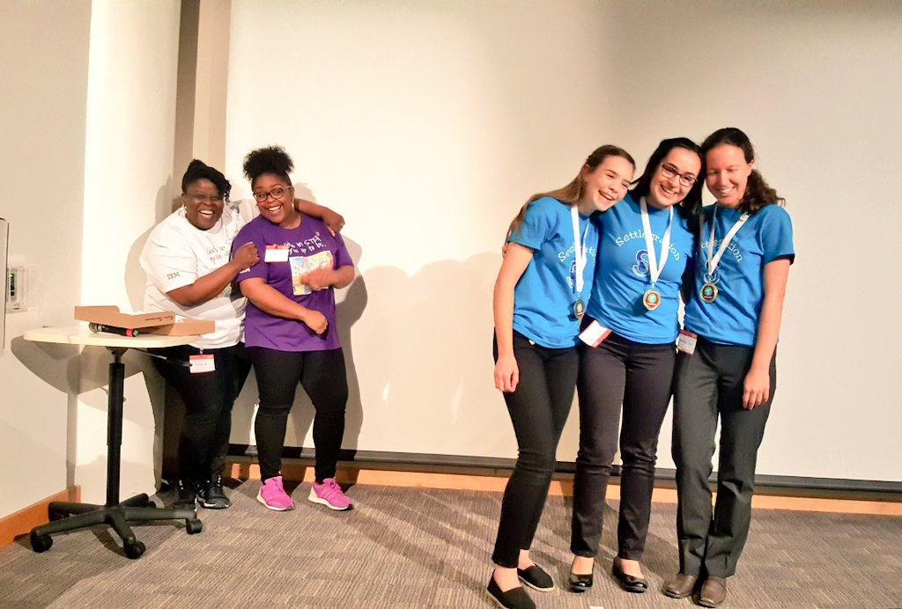
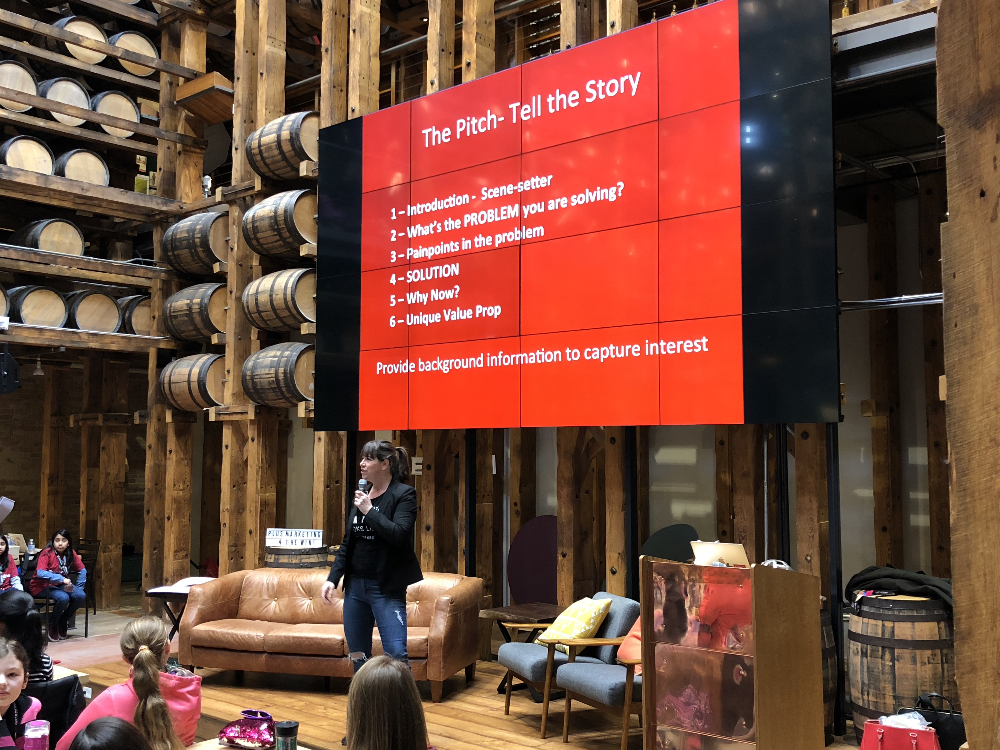
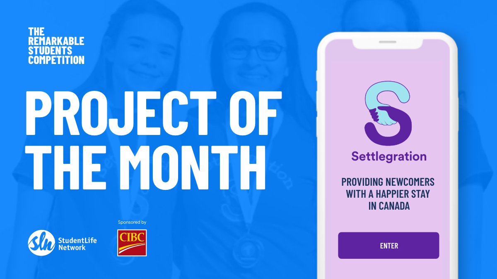

Settlegration App
How It Started
If you google "Settlegration", you might come across an image like the one above. You can find me on the right along with my teammates Sophia Mourcos (far left) and Marina Ilyas (center). This was one of the most magical experiences of my life; the judging committee announced our team as the winner of the 2018 Technovation Ontario competition after two rounds of pitching and 6 months of hard work. We then represented team Canada as World Semifinalists. As ideal as it seems right in this capture, our project started out with humble beginnings.
It was January 2018. I was sitting in the music room at school, and my best friend told me about an opportunity called Technovation, a global mobile app competition for girls aged 13-18. Having not touched a line of code at the time, I hesitantly said yes. Before I knew it, one of the most challenging but fulfilling experiences rolled out like a red carpet before me.
Competition time
frame
Jan. 2018 - May 2018
Tools/Methodologies
MIT App Inventor
Agile
Prototyping
Role
Chief Business Officer
The Idea
At our initial meeting, our idea came very quickly to us because of one of my team's main commonalities: our parents were newcomers. Knowing their hardships in coming to Canada, we wanted to help future Canadian newcomers have an easier settlement process. That was the inception of the name Settlegration.
After some initial scoping and organization of team roles and tasks, we registered for the competition and were able to find a mentor within a day. He happened to be Lawrence Folland, former President of the Cheriton School of Computer Science at the University of Waterloo. We wouldn't be able to finish the project without his continuous support throughout our progress; he invited us to his office to update him on our progress, goals and ideas at our weekly standups.
Places We Went
Throughout the app making process, Technovation Waterloo, our local chapter, guided us with monthly workshops on design, business, pitching and best coding practices at leading companies in the Waterloo Region. Below is a pitching workshop we attended at Shopify! (One of my first steps into a tech office).
Finishing Touches
A month before the provincial pitching competition, our app, business plan and pitch videos ready to be submitted to world judges. (We even had a logo and embroidered team shirts to boot which were donated by a local graphic designer and embroiderer)!
Our demo video of our first iteration of our app:
What's Next
My team is continuing to work on the app with $6500 in funding from the Remarkable Student's Competition by CIBC and #RisingYouth! We are hoping to release it in 2022 after redeveloping the app, communicating with more stakeholders and registering Settlegration as a non-profit.
